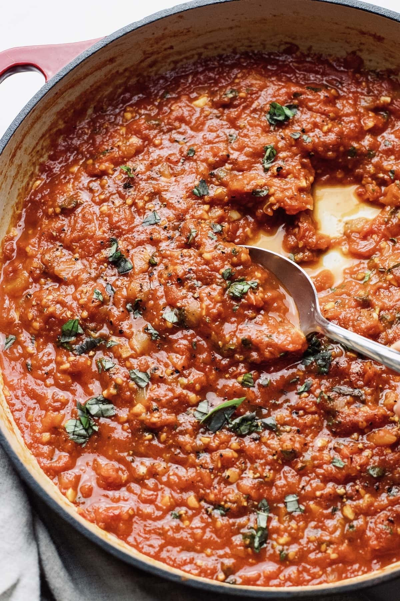

Tomato sauce

Description
A delicious and easy-to-make tomato sauce with minced pork meat that will take just 15 minutes of your time.
Ingredients
- Four large tomatoes
- 250g minced pork meat
- Salt
- Pepper
- Cinnamon
- Fresh basil leaves
- Fish sauce
- Unsalted butter
- One large onion
- Garlic
Steps
- Chop the onion finely.
- Chop the garlic finely. You can use as little or as much garlic as you would like.
- Cut the tomatoes into smaller pieces.
- Use a small saucepan and put in on a stove on medium heat.
- Put some butter into the pan and let it melt.
- Put the onion into the pan first and let it cook for a while. Then add the onion.
- When both get golden, put the minced meat into the pan and stir.
- Add a little bit of salt into the meat and mix it together.
- When the meat is almost done, put the tomatoes into the pan and add salt on each of the tomatoes.
- Put a lid on the saucepan, lower the heat and wait.
- After a while, the tomatoes should be cooked.
- Stir the mixture together and put all the spices in the sauce. You can use as much as you would like.
- After it's done, you can serve it with any pasta of your preference.
- Put a basil leaf on top of the dish.